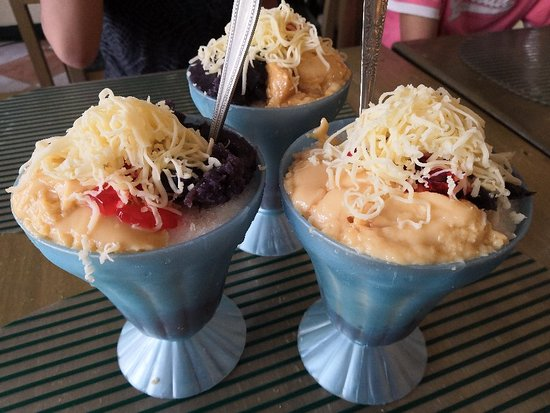
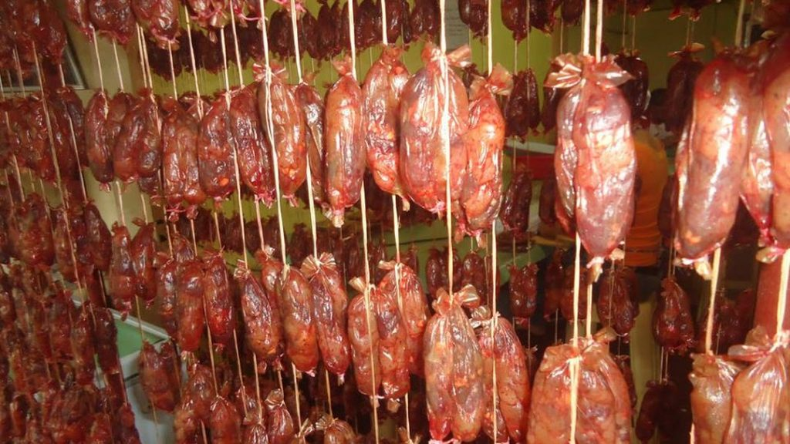
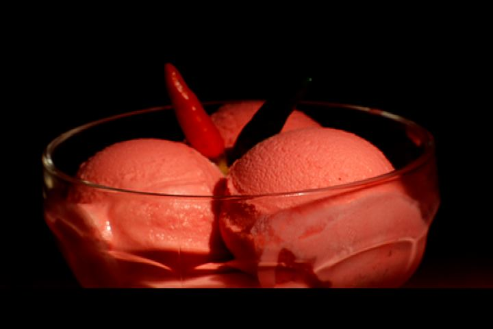
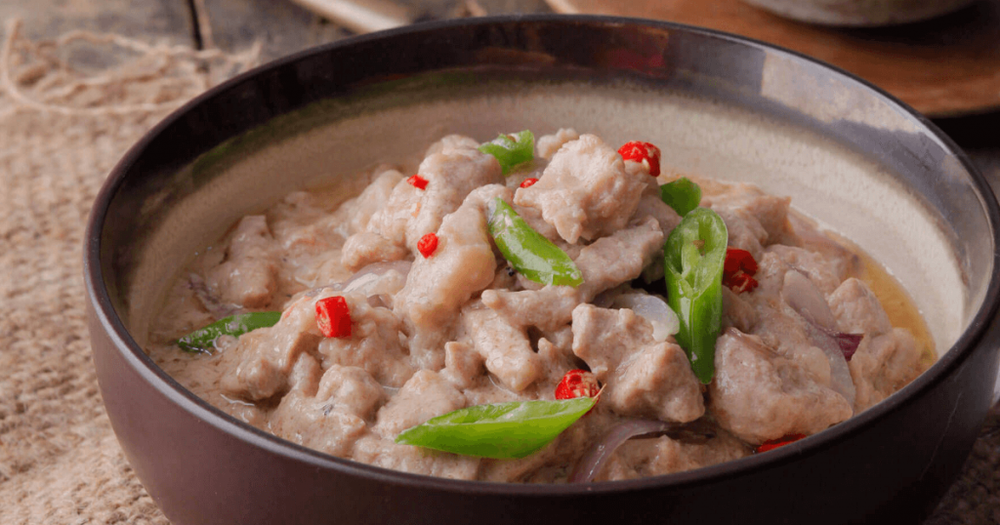
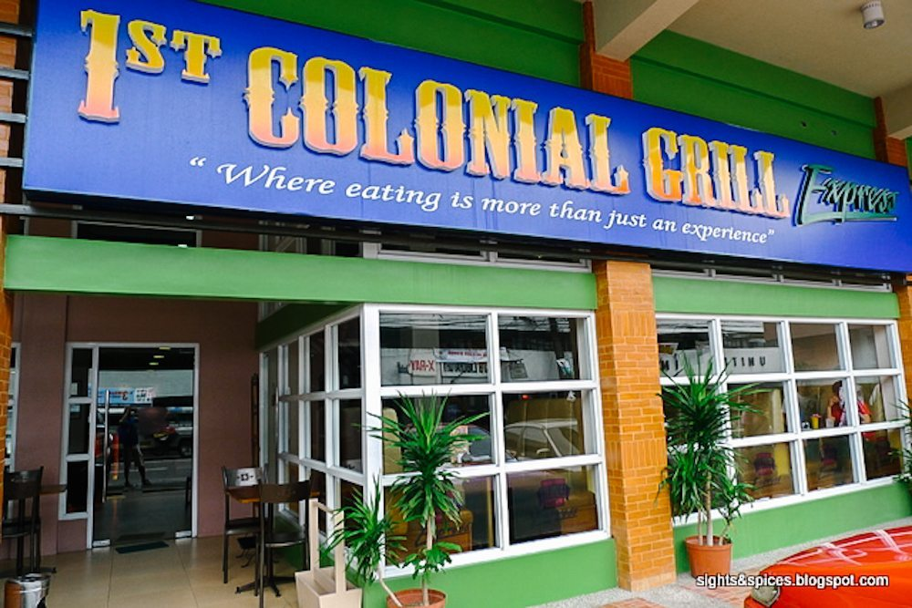

Albay Itinerary:
Ultimate Travel Guide
Albay is known for its homegrown premium pilinuts. The usual favorites are crispy candies pilinuts with honey, roasted and salted pili, mazapan, butternuts, caramelitos, pastillas and sesame seed coated pilinuts.
RECOMMENDED FOODS
There are only a few restaurants in Albay, but that shouldn’t stop you from having filling meals especially with unique dishes in the province. Here are some must-try dishes that are staples in Albay restaurants or homestay kitchens.
- PILINUTS
- PINANGAT
- SILI ICE CREAM
- BICOL EXPRESS
- DJC HALO-HALO
-
DJC Halo-halo is the sweetest you will ever experience in Albay! This famed halo-halo’s unique flavor has generous amount of shredded cheese toppings. The balance of sweetness and salty flavor gave DJC a good name.

- GUINOBATAN LONGGANISA
Guinobatan Longganisa is a pork sausage in diminutive size and with distinct salty-sour fla or, dipped in vinegar and served with egg.

Albay is known for its homegrown premium pilinuts. The usual favorites are crispy candies pilinuts with honey, roasted and salted pili, mazapan, butternuts, caramelitos, pastillas and sesame seed coated pilinuts.
Pinangat is a version of laing, a famous native chili-hot dish of a little town of Camalig, Albay which is a blend of ground pork, coconut milk, diced shrimps, and chili wrapped in gabi leaves.

This dish is a well-known among Bicolanos because of its distinctive taste that a Bicolano could perfect.

Home to the 1st Colonial Grill restaurant is the “sili” (chili) ice cream. Home to the 1st Colonial Grill restaurant is the “sili” (chili) ice cream.
This ice cream, with “siling labuyo” as one of its main ingredients, comes in different levels of spiciness with the Mayon Volcano level sili ice cream as the spiciest of them all.

The harmony of a cold, creamy and spicy ice cream is what makes this dessert a hit among local diners and as well as tourists.
Bicol Express is what Bicolanos are known for.It has that good amount of heat that can awaken your taste buds.

It has pork cubes cooked in coconut milk and sili with that yumminess you’ll crave after.
RESTAURANTS
- COLONIAL GRILL
Established in 2004, 1st Colonial Grill was opened and has since served authentic Bicol dishes.

Over the years, 1st Colonial Grill developed its menu, as it now serves “Bicolano food fusion,”their own take on making traditional Bicolano dishes more flavorful without losing its natural flavors.